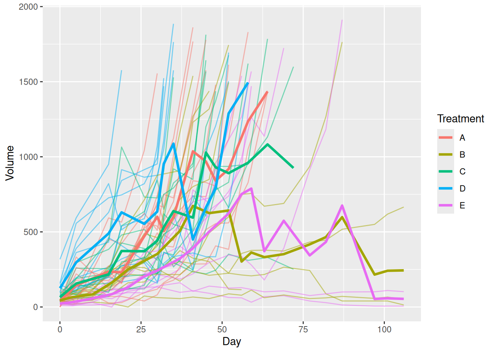
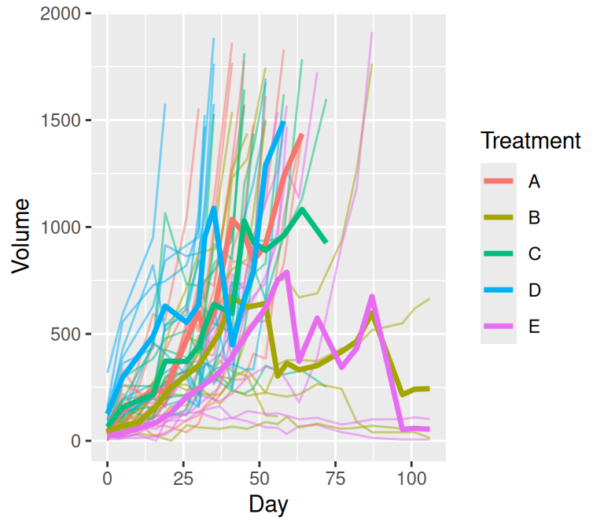
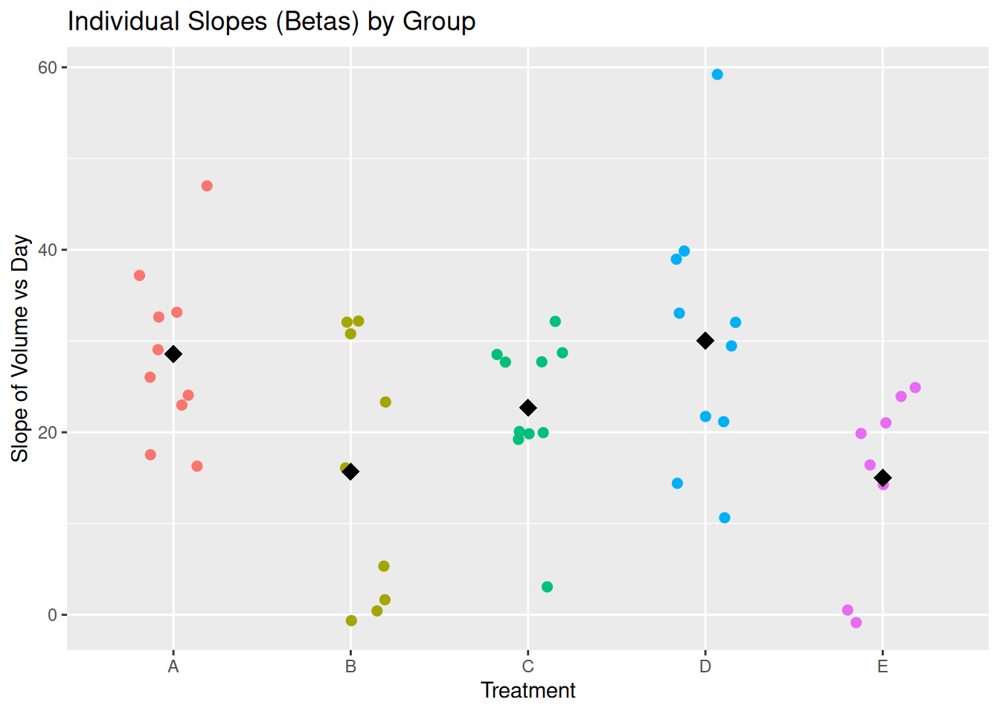
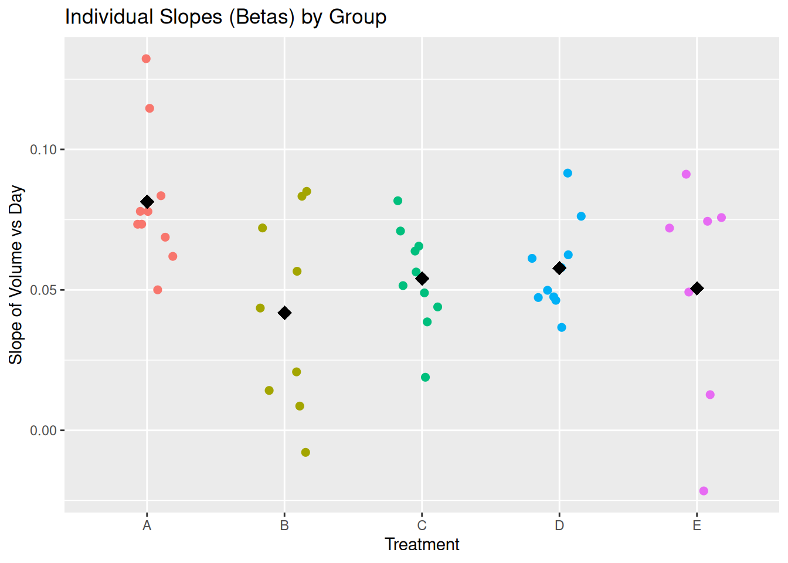

We should write a brief intro here for one of the data sets.
melanoma2 data set
Plotting the Mean
plots(melanoma2, Treatment, Day, Volume, ID, stat = mean)
Plotting the Median
plot_median(
data = melanoma2,
group = "Treatment",
time = "Day",
measure = "Volume",
id = "ID"
)
Plotting the median using meta data produced from the tumr function
meta_data <- tumr(ID, Day, Volume, Treatment)
meta_data |>
plot_median(data = melanoma2)
Response Feature Analysis of melanoma2
(rfeat_ex <- meta_data |>
rfeat(data = melanoma2,
comparison = "both"))$relevant_information
$relevant_information$ID
[1] "ID"
$relevant_information$Time
[1] "Day"
$relevant_information$Measure
[1] "Volume"
$relevant_information$Group
[1] "Treatment"
$betas
ID Beta Group
1 1 47.0148950 A
2 2 16.0901253 B
3 3 21.0324009 E
4 4 28.7093841 C
5 5 32.0516382 D
6 6 16.2776725 A
7 7 32.1910564 B
8 8 19.2286772 C
9 9 10.6340211 D
10 10 24.0759514 A
11 11 19.8278748 C
12 12 21.1606679 D
13 13 26.0464154 A
14 14 1.6506856 B
15 15 -0.8443708 E
16 16 27.7222379 C
17 17 33.0581178 D
18 18 29.0481531 A
19 19 0.4198989 B
20 20 23.9243121 E
21 21 20.0906382 C
22 22 21.7307173 D
23 23 22.9872394 A
24 24 32.0718530 B
25 25 24.8975827 E
26 26 27.6958231 C
27 27 39.8723510 D
28 28 33.1520322 A
29 29 23.3120488 B
30 30 19.8711773 E
31 31 19.9633243 C
32 32 59.2112275 D
33 33 32.6405842 A
34 34 5.3277781 B
35 35 16.4144511 E
36 36 3.0714478 C
37 37 38.9607063 D
38 38 17.5366811 A
39 39 -0.6351389 B
40 40 0.5088185 E
41 41 32.1539405 C
42 42 29.4622148 D
43 43 37.1976095 A
44 44 30.7903660 B
45 45 14.2636072 E
46 46 28.5329927 C
47 47 14.4089561 D
$summary
# A tibble: 5 × 2
Group average
<chr> <dbl>
1 A 28.6
2 B 15.7
3 C 22.7
4 D 30.1
5 E 15.0
$test
$test$anova
Df Sum Sq Mean Sq F value Pr(>F)
Group 4 1803 450.7 3.408 0.0168 *
Residuals 42 5554 132.2
---
Signif. codes: 0 '***' 0.001 '**' 0.01 '*' 0.05 '.' 0.1 ' ' 1
$test$tukey
Tukey multiple comparisons of means
95% family-wise confidence level
Fit: aov(formula = Beta ~ Group, data = betas)
$Group
diff lwr upr p adj
B-A -12.9067597 -27.9647734 2.1512540 0.1239895
C-A -5.8980893 -20.5544836 8.7583050 0.7807978
D-A 1.4573384 -13.1990559 16.1137327 0.9985310
E-A -13.5892260 -29.1346797 1.9562277 0.1120331
C-B 7.0086704 -8.0493433 22.0666841 0.6765864
D-B 14.3640981 -0.6939156 29.4221119 0.0679418
E-B -0.6824663 -16.6071331 15.2422006 0.9999476
D-C 7.3554277 -7.3009666 22.0118221 0.6121467
E-C -7.6911367 -23.2365904 7.8543170 0.6248441
E-D -15.0465644 -30.5920181 0.4988893 0.0619834
attr(,"class")
[1] "rfeat"rfeat plot
plot(rfeat_ex)